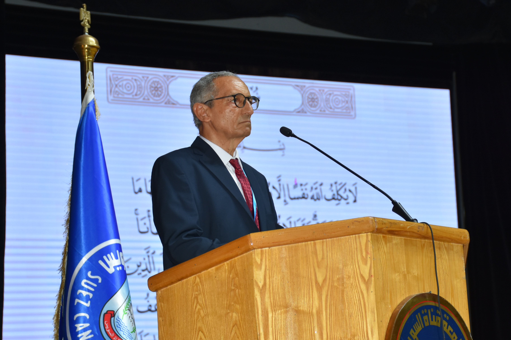

📧
raoufmoustafa2@hotmail.com
Hello, I'm
Abdelraouf A. Moustafa
Professor at Suez Canal University, Egypt

About
Faculty of Science, Suez Canal University, Ismailia, Egypt.
Founder of Egyptian society of Environmental Science, Egypt.
Editior-in-Chief of Catrina: The International Journal of Environmental Sciences.
IUCN member.